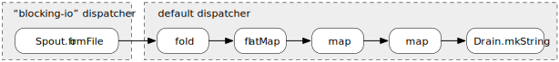

MD5 Example
This example demonstrates a small practical application of file streaming in swave.
The following code shows how one could compute an MD5 hash string for files of arbitrary size:
import java.security.MessageDigest
import java.io.File
import scala.concurrent.Future
import swave.core.io.files._ // enables `Spout.fromFile`
import swave.compat.scodec._ // enables `ByteVector` support
import swave.core._
implicit val env = StreamEnv()
def md5sum(file: File): Future[String] = {
val md5 = MessageDigest.getInstance("MD5")
Spout.fromFile(file) // Spout[ByteVector]
.fold(md5) { (m, bytes) => m.update(bytes.toArray); m } // Spout[MessageDigest]
.flatMap(_.digest().iterator) // Spout[Byte]
.map(_ & 0xFF) // Spout[Int]
.map("%02x" format _) // Spout[String]
.drainToMkString(limit = 32) // Future[String]
}
// don't forget to shutdown the StreamEnv at application exit with
// env.shutdown()The stream graph defined by this code is quite straight-forward (a simple pipeline), but there are still a few interesting points to discuss:
-
The Spout produced by
Spout.fromFileis always asynchronous and runs on the dispatcher configured under the name “blocking-io” (see the File IO chapter for more details). The reason for this is that there is no general and truly asynchronous kernel API for non-blocking file IO, which causes all file system accesses to be inherently blocking. In order to mitigate the potential resource exhaustion problems that could occur in higher load scenarios all file IO operations in swave are fenced off from the rest of the application by confining them to the “blocking-io” dispatcher. -
swave itself doesn’t provide an abstraction for an immutable sequence of bytes, because there already exist excellent implementations for this, for example in Akka or scodec. Rather, swave defines a type class Bytes, which abstracts over available “byte sequence” implementations and also allows you to supply your own, if required. swave comes with support for akka.util.ByteString and scodec.bits.ByteVector predefined, which can be activated with a single import (see the File IO chapter for more details).
-
While the code above will work with files of arbitrary size the memory required during execution is “small” and fully bounded. All action happens in chunks of configurable size.
(see settingswave.core.file-io.default-file-reading-chunk-size) -
Because the
fromFileSpout is asynchronous the stream pipeline in this example actually consists of two parts that are running in parallel.
The last point deserves some further explanations.
Here is a visualization of the example’s stream pipeline:

As you can see there is an asynchronous boundary between the first two stages of the graph, which causes both parts to run independently from each other and thus concurrently. Adding additional asynchronous boundaries, for increasing the degree of concurrency, is as easy as adding an .asyncBoundary() transformation at arbitrary points in the pipeline.
This makes trying out different distribution patterns of your business logic over several threads and cores extremely easy. Adding a boundary means adding a single line of code. Moving a boundary means moving a single line of code. If you contrast that with the amount of work required for introducing, moving or removing asynchronous boundaries in traditional thread-based applications or even actor-based ones some of the benefits of stream-based programming should become apparent.
Improved Version
Because computing hashes across streams of bytes is such a common task swave provides built-in support for the most common hashes. By relying on the md5 transformation the example above can be somewhat simplified to the following snippet, which will also perform slightly better:
import java.io.File
import scala.concurrent.Future
import swave.core.io.files._ // enables `Spout.fromFile`
import swave.core.hash._ // enables the `md5` transformation
import swave.compat.scodec._ // enables `ByteVector` support
import swave.core._
implicit val env = StreamEnv()
def md5sum(file: File): Future[String] =
Spout.fromFile(file) // Spout[ByteVector]
.md5 // Spout[ByteVector]
.flattenConcat() // Spout[Byte]
.map(_ & 0xFF) // Spout[Int]
.map("%02x" format _) // Spout[String]
.drainToMkString(limit = 32) // Future[String]
// don't forget to shutdown the StreamEnv at application exit with
// env.shutdown()